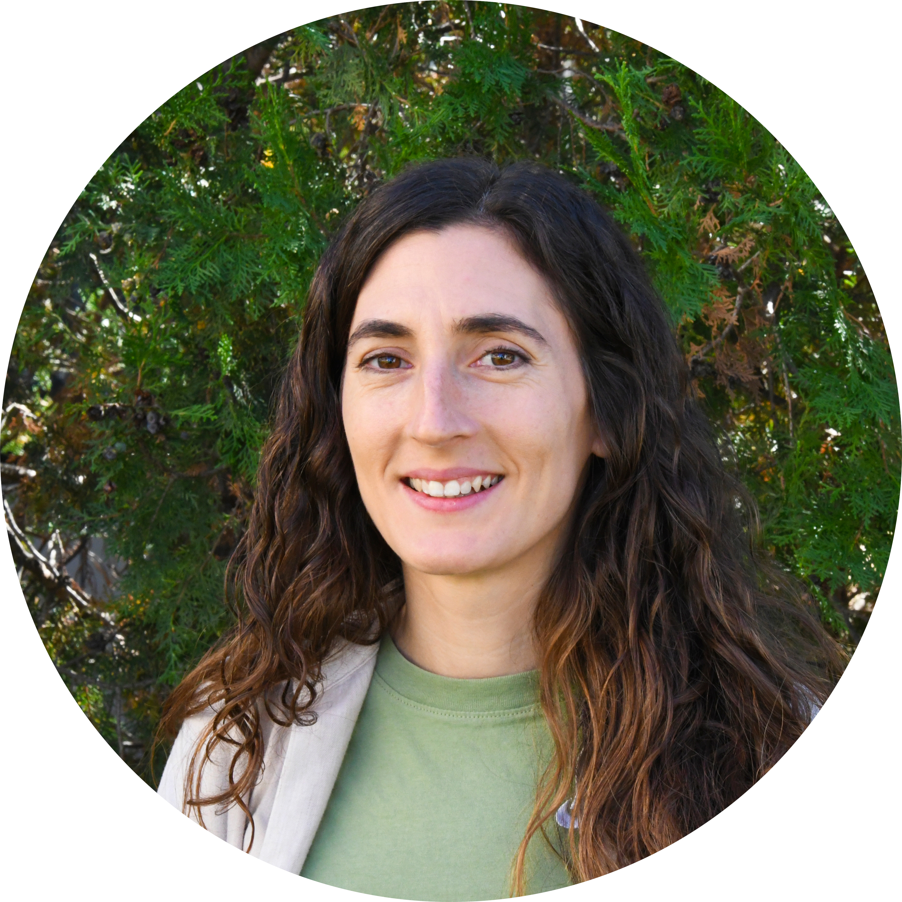

Remote Sensing & Earth Observation Researcher
PhD in Geomatics Engineering (EuroSDR Award 2021) with 10+ years of experience in Earth observation, urban remote sensing, and climate-related risk assessment. Advancing science through AI-driven methods to understand our changing planet.

I am a passionate researcher in Earth observation science, developing methods to better understand
and address environmental and urban challenges. I have contributed to numerous international projects
on urban monitoring, vulnerability assessment, and disaster risk reduction.
I enjoy learning new skills, taking on challenges, and working across disciplines to create meaningful solutions.
Beyond research, I love running, hiking, and exploring the outdoors. I also enjoy cooking and eating plant-based food.
Image and Signal Processing (ISP), Image Processing Laboratory (IPL)
Geo-Risks & Civil Security, Earth Observation Center (EOC), Oberpfaffenhofen
Geo-Environmental Cartography and Remote Sensing (CGAT)
Polytechnic University of Valencia (UPV) · Cum Laude, International Doctorate
EuroSDR Award 2021 for best European PhD thesis in Geoinformation. Link
Thesis: Development and analysis of land-use/land-cover spatio-temporal metrics in urban environments. Link
Polytechnic University of Valencia (UPV) · GPA 8.6/10, ranked 2nd/36
Polytechnic University of Valencia (UPV) · GPA 6.6/10, ranked 11th/83
Erasmus mobility – Brno University of Technology (Czech Republic, 2010–2011)
Exploring the intersection of Earth observation, AI, and environmental science to address global challenges.
Advanced techniques for monitoring urban development and morphology using multitemporal satellite imagery, LiDAR data, and spatial metrics. Applications in Africa, Latin America, and Europe.
AI-driven and causal inference methods for analyzing climate extremes including drought, heatwaves, and wildfires. Spatio-temporal deep learning for multi-sectoral impact prediction.
Spatio-temporal modeling, fragmentation analysis, and landscape metrics for understanding urban growth patterns and their links to socio-economic indicators.
EO-based exposure and vulnerability assessment for landslide risk. Development of early warning system prototypes in informal settlements (Medellín, Colombia).
Deep learning, explainable AI (XAI/SHAP), and causal inference for Earth observation. Integration of EO with social media, census, and geospatial data.
Analysis of rural-urban and cross-border migration in West Africa using big data approaches integrating EO, social media, and census data.
17 peer-reviewed ISI journal papers, 1 book chapter, and 14 conference papers. Links go to the official DOI / publisher page where the PDF may be available.
Nat. Hazards Earth Syst. Sci. (Q1) · 2026
Int. J. Appl. Earth Obs. Geoinf. (Q1) · 2026 · 146, 105153
Nat. Hazards (Q1) · 2026 · 122, 139
Applied Geography (Q1) · 2025 · 181
PLoS ONE (Q1) · 2025 · 20(4): e0321691
Nat. Hazards Earth Syst. Sci. (Q1) · 2024
Nat. Hazards Earth Syst. Sci. (Q1) · 2023 · Highlight paper
Population, Space and Place (Q1) · 2023
Int. J. Geogr. Inf. Syst. (Q1) · 2023 · 37(6), 1338–1364
PLoS ONE (Q1) · 2022 · 17(9): e0274504
Natural Hazards (Q1) · 2022
Computers, Environment and Urban Systems (Q1) · 2021 · 85, 101549
Int. J. Geogr. Inf. Syst. (Q1) · 2021 · 35(2), 375–396
ISPRS Int. J. Geo-information (Q1) · 2020 · 9(7), 436
Computers, Environment and Urban Systems (Q1) · 2019 · 73, 27–39
Geocarto International (Q1) · 2018 · 33(5), 443–457
Revista de Teledetección · 2015 · 43, 77–90
Geolingual Studies on Urban Space, New Directions in World English Research, Edinburgh University Press · 2026
NeurIPS 2026 Workshop E-values, 13 December 2026
RAQRS 8th International Symposium, 21–24 September 2026, Valencia, Spain
EGU General Assembly 2026, Vienna, Austria, 3–8 May 2026
EGU General Assembly 2026, Vienna, Austria, 3–8 May 2026
ESA Living Planet Symposium 2025
JURSE 2025 · IEEE · 2025
EO for Africa Symposium 2024, ESA-ESRIN, Frascati, Italy, 23–26 Sept 2024
43rd EARSeL Symposium, 17–20 June 2024, Manchester, UK
43rd EARSeL Symposium, 17–20 June 2024, Manchester, UK
UN-SPIDER Bonn International Conference, 12–14 March 2024, Bonn, Germany
JURSE 2023, Heraklion, Greece · IEEE
JURSE 2023, Heraklion, Greece · IEEE
JURSE 2023, Heraklion, Greece · IEEE
JURSE 2023, Heraklion, Greece · IEEE
ESA Living Planet Symposium 2022, 23–27 May, Bonn, Germany
ESA Living Planet Symposium 2022, 23–27 May, Bonn, Germany
CFP Urban Geographies in the Global South Virtual Workshop, Wien, Austria, March 2022
JURSE 2022 Online Lounge, 2–3 February, Medellín, Colombia
Tropentag 2022, Prague, Czech Republic, 14–16 September 2022
REAL CORP 2021, pp. 173–182, Wien, Austria
XVIII Congreso de la AET (Teledetección), Castellón, Spain, 2018
I Congreso en Ingeniería Geomática, 5–6 July 2017, Valencia, Spain
XVII Congreso de la AET (Teledetección), pp. 311–314, 4–7 October 2017, Murcia, Spain
ISPRS Archives · XLI-B8, 1029–1036 · ISPRS Congress, Prague 2016
XVI Congreso de la AET (Teledetección), 21–23 October 2015, Sevilla, Spain
ISPRS Archives · XL-7/W3, 1411–1418 · ISPRS Geospatial Week, Berlin 2015
Leading and contributing to international research projects addressing climate change, urban development, and disaster risk reduction.
Towards a digital TWIN for Physical and socio-Economic Analysis of Coastal Systems
Role: Leading subproject 3 "Human characterization"
Spanish Ministry of Science and Innovation (AEI)
Mediterranean Digital Twin Network for Understanding Climate Extremes
Role: WP Lead – "Understanding climate extremes in the Mediterranean"
Horizon Europe
AI-based detection and monitoring of climate-induced natural disasters and analysis of exposure
Role: WP Lead – "Exposure assessment"
German Federal Ministry of Education and Research (BMBF)
Earth Observation Innovation Laboratory for Climate Adaptation and Mitigation
Role: Co-lead "Geo-risks" WP within Cross-cutting Issues
Bavarian Ministry of Economic Affairs (StMWi)
Rural-urban and cross-border migration in West Africa – an integrated assessment framework of drivers, processes and sustainable responses
Role: WP Lead – "Mobility analysis using bigdata approaches"
BMBF
Framework Partnership Agreement on Copernicus User Uptake – monitoring of environmental indicators (Africa)
Role: Leading scientific development
European Commission (DG DEFIS)
Strengthening the Resilience of Informal Settlements against Slope Movements (Medellín, Colombia)
Role: WP Lead – "Exposure and vulnerability assessment"
CLIENT II – BMBF
Higher Education interdisciplinary Reform in Tourism management and Applied Geoinformation curricula
Role: Project management assistant and administration
European Union (Education, Audiovisual and Culture Executive Agency)
Analysis and assessment of forest structure parameters from LiDAR for modelling fuel potential
Role: Project management assistant; field data acquisition
Ministerio de Economía y Competitividad / FEDER
Characterization of forest structure by integrated analysis of LiDAR, terrestrial laser scanning and imagery
Role: Project management assistant
Ministerio de Economía y Competitividad / FEDER
International conference presentations, invited lectures, workshops and webinars.
Committed to training the next generation of researchers in Earth observation and geospatial science.
Open-source and registered software developed for spatial analysis.
An Object-based Fragmentation Analysis Software Tool
A processing tool for extracting landscape metrics from vector-based LULC data. It computes fragmentation indices grouped into five categories — area/perimeter, shape, aggregation, diversity, and contrast — at multiple hierarchical levels (object, class, super-object). Enables temporal analysis of fragmentation and urban morphology.
Languages, programming, geospatial tools, and AI/statistical methods.
Interested in collaboration, research opportunities, or discussing Earth observation applications? I'd love to hear from you.
Image Processing Laboratory (IPL)
Universitat de València, Spain
I'm always interested in discussing new research opportunities, collaborative projects, and innovative applications of Earth observation technologies for addressing global challenges.
Send Message